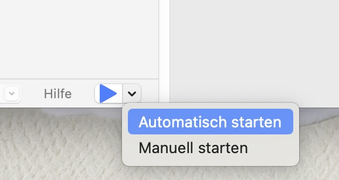

Nach dem Start der Anwendung wird im Editorteil des Fensters ein kleines Postscript-Programm* angezeigt.
Auf der linken Seite können Sie Text als Postscript-Befehle eingeben. Die rechte Seite kann nur vergrößert oder verkleinert und geschwenkt werden. Wenn Sie mit der rechten Maustaste in diesen Bereich klicken, erhalten Sie eine Reihe von Optionen zur Bearbeitung des gerenderten Bildes sowie die Möglichkeit, die PDF-Datei in einer Datei/auf einem Laufwerk zu speichern.
Durch Drücken der blauen Abspieltaste am unteren Rand des Fensters wird ein Dialog zum Speichern der Datei „Write to ps“ angezeigt. Bitte geben Sie einen Dateinamen an und wählen Sie den Speicherort im Dateidialog. Ein expliziter Dateidialog ist notwendig, da die Anwendung in einer Sandbox laufen soll und nicht direkt auf das Dateisystem zugreifen kann**.
Nachdem Sie auf die Schaltfläche Speichern geklickt haben, wird die Postscript-Datei gerendert und auf der rechten Seite in der PDF-Vorschau angezeigt.
Ersetzen Sie die Schriftgröße „50“ in Zeile 16, indem Sie 100 darüber tippen. Nach dem Drücken der Abspieltaste wird der Text auf der rechten Seite vergrößert.
Ähnlich wie mit dem Xcode-Playground können Sie in den automatischen Modus wechseln, indem Sie Automatisch ausführen wählen und das kleine Dreieck neben der Schaltfläche Abspielen gedrückt halten. Das Bild wird in regelmäßigen Abständen aktualisiert.
Markieren Sie die „4“ vor dem Ausdruck setLineWidth und ersetzen Sie sie durch 9. Die Zahl wird in Schwarz angezeigt, wechselt in die Zahlenfarbe und die Breite der Unterstreichung nimmt zu.
Ersetzen Sie die 9 durch den Buchstaben „B“. Dies führt zu einem Fehler und die Postscript-Datei kann nicht gerendert werden. In diesem Fall blinkt ein gelbes Ausrufezeichen in der rechten oberen Ecke des PDF-Abschnitts.
Wenn Sie auf das Ausrufezeichen klicken, wird die Fehlermeldung angezeigt: „Postscript-Datei konnte nicht konvertiert werden“. In diesem Fall ist der Buchstabe B der fehlerhafte Befehl, der in der Fehlermeldung „OffendingCommand: B; "
Korrigieren Sie den Fehler, indem Sie den Buchstaben B wieder durch „4“ ersetzen, und die Datei wird erneut gerendert.
)* Die Datei ist auch als Beispieldatei verfügbar.
)** Derzeit wird die Sandbox nicht unterstützt, da sie die Verwendung eines externen Tools nicht zulassen würde.